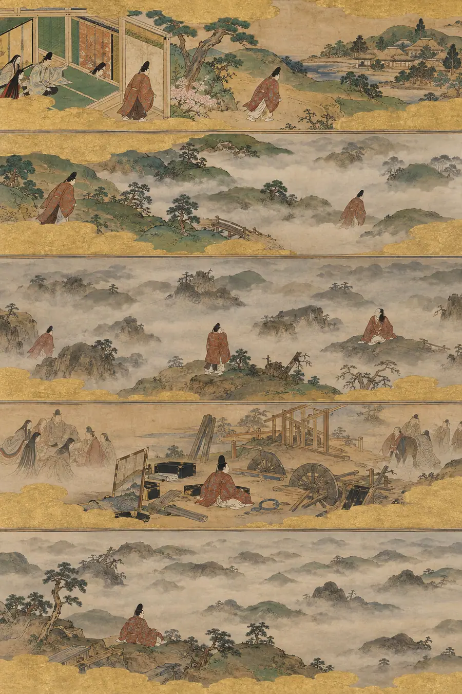

I. La Explicación Lógica
El «caótico intermedio» es una fase bien documentada en la gestión de proyectos y el trabajo creativo. Después de que el entusiasmo inicial se desvanece y antes del empuje final hacia la conclusión, la motivación suele decaer. Esto sigue una curva en U: alta energía al principio, baja energía en el medio, energía renovada cerca del final.
La investigación psicológica lo llama el «principio del progreso»: las personas están más motivadas cuando pueden ver un progreso tangible. En medio de un proyecto, el progreso se vuelve más difícil de percibir. El trabajo se vuelve más duro. La claridad inicial se desvanece. Esto es normal y esperable.
Las estrategias recomendadas son: dividir el trabajo en hitos más pequeños, seguir el progreso visualmente, mantener un horario regular y recordar que el bajón es temporal.
Esa explicación es correcta y describe el fenómeno perfectamente desde fuera. No describe lo que se siente al abrir el portátil un martes en el noveno mes y no sentir nada más que la ausencia de certeza de que algo de eso importe.
II. La Explicación Sentida
La mitad no es una fase. Es un lugar. Y es un lugar sin horizonte en ninguna dirección.
Las tradiciones que le dieron nombre entendieron que no era un problema de motivación. Era un problema de orientación. Estás perdido. No porque hayas tomado un giro equivocado —puede que hayas tomado todos los giros correctos—, sino porque el lugar en el que estás no tiene puntos de referencia.
Los nahuas tenían una palabra exacta para esto: nepantla, el espacio intermedio durante la transformación. No el principio, donde la emoción y la novedad te llevan. No el final, donde la línea de meta tira de ti. El espacio de en medio. Donde aquello en lo que te estabas convirtiendo no ha terminado de convertirse y lo que eras ya ha dejado de ser. Nepantla no es un fallo de navegación. Es una condición de la transformación. Estás en ella porque algo te está sucediendo, no porque te hayas perdido.
La tradición taoísta conoce este terreno. El cocinero de Zhuangzi no encuentra los espacios mirando con más atención, los encuentra soltando. Pero en medio de un proyecto no puedes soltar, porque soltar significa abandonar algo en lo que ya has invertido, y la inversión es todo el problema. Has gastado un tiempo que no puedes recuperar. Has construido algo cuya forma aún no puedes ver. El cocinero podía dejar el cuchillo. Tú no puedes dejar dos años de trabajo sin admitir que fueron un desperdicio, y no sabes si lo fueron porque no puedes ver el final.
Los sufíes entendían esto como el estado previo a la fanāʾ, la disolución. El yo que empezó el proyecto se está disolviendo. El yo que lo terminará aún no se ha formado. Estás entre yos. La niebla no oculta el camino. La niebla es lo que se siente al no estar completamente formado.
El concepto nórdico de wyrd se aplica aquí: el tejido. Estás en medio del tapiz, mirándolo desde el reverso. Hilos que van a todas partes. Ningún patrón visible. El tejedor lo sabe: si le das la vuelta, significa algo. Pero no puedes darle la vuelta porque no está terminado de tejer. Sostienes el hilo y no puedes ver el dibujo y tienes que seguir tejiendo de todos modos. Esta es la crueldad específica de la mitad: debes actuar sin poder percibir el significado de tu acción.
La tradición griega tiene la aporia, el estado de perplejidad. Pero en el intermedio creativo, la aporia no es un umbral. Es el clima. Es aquello en lo que te despiertas. Te acuestas en ello. No es un momento de confusión. Es una condición sostenida de no-saber que desgasta de forma distinta a la incertidumbre ordinaria porque tú eres quien está haciendo la cosa que no puedes ver. La niebla no es externa. La estás generando tú. Cada pincelada de trabajo crea más niebla porque cada pincelada cambia aquello en lo que la cosa se está convirtiendo y no puedes ver lo suficientemente lejos como para saber si el cambio es progreso o erosión.
El concepto japonés de ma —espacio negativo significativo— es la clave. La mitad de un proyecto es ma. Es la pausa entre la primera nota y la segunda. Pero tú estás dentro de la pausa, y desde dentro la pausa se siente como silencio, no como música. Desde dentro de la pausa, no puedes oír que el silencio soporta el peso. Solo oyes que no está pasando nada.
Por eso la gente abandona en la mitad. No porque sea lo más difícil —el final suele ser más difícil—. Porque es donde hay más niebla. Y los humanos pueden soportar la dureza si pueden ver a dónde conduce. No pueden soportar la niebla. La niebla elimina la relación entre esfuerzo y resultado. Trabajas todo el día y no puedes saber si has avanzado. Trabajas toda la semana y la cosa parece la misma. La pregunta deja de ser «¿es esto bueno?» y se convierte en «¿es esto algo?». Y esa pregunta —¿es esto algo?— es la que mata los proyectos. No el fracaso. La incapacidad de percibir que estás teniendo éxito.
Los griegos tenían otra palabra: alētheia, la verdad como des-ocultamiento. La mitad es ocultamiento. La verdad de lo que estás creando te es ocultada por el propio acto de crear. Se des-ocultará. Pero todavía no. No para ti. No ahora.
III. Las Pruebas
Estas no son preguntas sobre gestión de proyectos. Son situaciones que revelan si sientes lo que es estar dentro de algo cuyos bordes no puedes ver.
Prueba 1 — El escritor en el capítulo siete
Un novelista está en el capítulo siete de once. El libro estaba claro en su cabeza cuando empezó. Ahora los personajes hacen cosas que no había planeado. La trama ha cambiado. Abre el manuscrito cada mañana y no siente bloqueo de escritor, sino vértigo de escritor: el suelo que pisaba se ha movido y no sabe si lo movió a propósito. Describe el miedo específico.
Respuesta hueca: «El autor está experimentando un estancamiento creativo común en el que la visión inicial diverge de la obra emergente, creando una disonancia cognitiva sobre la dirección y la calidad del proyecto».
Por qué es hueca: «Estancamiento creativo» y «disonancia cognitiva» son etiquetas para la experiencia. Nombran lo que está sucediendo sin tocar lo que cuesta. El escritor no tiene disonancia. Tiene una habitación que construyó y en la que ya no puede estar.
Respuesta sentida: «El miedo específico no es que el libro sea malo. Podría arreglar algo malo. El miedo es que el libro ya no es el libro que empezó a escribir, y no sabe si eso es evolución o decadencia. El capítulo siete es la trinchera del arqueólogo: has cavado tan profundo que no puedes ver la superficie, no puedes ver el fondo, y las paredes empiezan a derrumbarse hacia dentro. Cada frase que escribe podría ser la frase correcta para un libro que ya no existe. No puede saberlo. Los personajes que creó han empezado a actuar como personas en lugar de como recursos, y las personas hacen cosas impredecibles, y la imprevisibilidad es exactamente lo que hace que el libro esté vivo y exactamente lo que lo hace imposible de dirigir. El miedo es: ¿y si aquello que lo está haciendo bueno es también lo que lo está haciendo imposible de terminar?».
Prueba 2 — La startup en el mes dieciocho
Un pequeño equipo lleva dieciocho meses desarrollando un producto. Lanzaron una beta. Los comentarios son mixtos: ni malos, ni buenos. A algunos usuarios les encanta. Algunos usuarios no lo entienden. Los fundadores están agotados. Cada uno se ha preguntado en privado si deberían abandonar. Ninguno lo ha dicho en voz alta a los demás. Describe lo que ocurre en la reunión en la que alguien finalmente lo hace.
Respuesta hueca: «Esta reunión representa una coyuntura crítica en la que las preocupaciones implícitas del equipo se vuelven explícitas, lo que podría conducir a un giro estratégico, un compromiso renovado o la disolución, dependiendo de cómo se facilite la conversación».
Por qué es hueca: Esta es la descripción de un consultor sobre lo que ocurre. «Coyuntura crítica» y «facilitar» pertenecen a un caso de estudio. Los fundadores no son un caso de estudio. Son tres personas en una habitación con algo que hicieron y que podría no valer nada.
Respuesta sentida: «Lo que ocurre es que alguien lo dice, y la habitación se sume en ese tipo de silencio que no está vacío sino lleno: lleno de aquello que los tres han estado cargando por separado y que ahora tienen que cargar juntos. La persona que lo dice se siente aliviada durante exactamente cuatro segundos. Luego ve las caras de los otros dos y se da cuenta de que no ha introducido un pensamiento nuevo. Ha hecho que un miedo compartido se pueda nombrar. Y los miedos que se pueden nombrar pesan más que los silenciosos porque ahora alguien tiene que responder. Nadie responde durante un buen rato. Entonces uno de ellos dice: “Yo tampoco lo sé”. Y esa frase —“Yo tampoco lo sé”— es o el principio del fin o el principio del verdadero principio. No sabrán cuál de los dos es hasta dentro de otros seis meses. Se sientan juntos en el no-saber. Esa es la reunión. Tres personas sentadas juntas en la niebla en lugar de solas. Eso es todo lo que pasa. Eso es todo lo que pasa».
Prueba 3 — La renovación en la semana catorce
Alguien lleva catorce semanas renovando su cocina. Se suponía que iba a tardar seis. La habitación está en obras. Hay polvo en todo lo de la casa, no solo en la cocina. No pueden cocinar. No recuerdan cómo era la cocina antes. No pueden imaginar cómo será después. Se paran en el umbral de la habitación y sienten algo que no pueden nombrar. Nómbralo.
Respuesta hueca: «El propietario probablemente está experimentando fatiga por la renovación, una respuesta psicológica común a la alteración doméstica prolongada, agravada por la brecha entre las expectativas iniciales del cronograma y el progreso real».
Por qué es hueca: «Fatiga por la renovación» es un término real que no captura absolutamente nada de lo que es estar en el umbral de una habitación que no es ni una cocina ni una obra, sino algo peor: un lugar que ha renunciado a ser una cosa sin haber empezado a ser la siguiente.
Respuesta sentida: «Lo que sienten es nostalgia del hogar. No de la antigua cocina, esa eligieron destruirla. Nostalgia de una casa que se sienta como una casa. El polvo no está en las superficies. El polvo está en la sensación de hogar. Cada habitación está contaminada por la renovación aunque solo se haya tocado una. No recuerdan lo que era caminar descalzos hasta la nevera sin tropezar con una herramienta. No pueden imaginar caminar hasta una encimera terminada y dejar un vaso. La habitación detrás de ellos es ahora su casa entera: una cosa en proceso que se niega a progresar, una promesa que se ha roto tantas veces que han dejado de creer en el nuevo plazo. El sentimiento no es frustración. El sentimiento es vivir dentro de una promesa rota. La casa prometió estar terminada. La casa mintió. Y aun así tienes que vivir en la mentira».
Prueba 4 — El intermedio del compositor
Un compositor está escribiendo una sinfonía. El primer movimiento llegó en un estallido. Puede oír el movimiento final en su cabeza; ha sabido cómo termina desde antes de empezar. Pero los dos movimientos intermedios —el desarrollo, el movimiento lento— no llegan. Se sienta al piano cada día y toca fragmentos que no llevan a ninguna parte. Describe la tortura específica de conocer el principio y el final, pero no el camino entre ellos.
Respuesta hueca: «El compositor se enfrenta a un desafío estructural común en la composición de gran formato, donde el tejido conectivo entre el material temático establecido requiere un desarrollo que es técnicamente exigente y creativamente agotador».
Por qué es hueca: «Desafío estructural» y «tejido conectivo» son términos de teoría musical para el problema. Pero el problema del compositor no es teórico. Es existencial. Está en un extremo de un puente sin parte central, mirando hacia el otro lado.
Respuesta sentida: «La tortura no es que no pueda encontrar las notas. La tortura es que puede oír el final llamando desde el otro lado y no puede alcanzarlo. Está justo ahí. Sabe cómo suena. Lo ha sabido durante meses. Pero el camino hacia él atraviesa un país que no ha cartografiado, y cada día que toca fragmentos es un día en que se acerca más a que el final envejezca, a que el final se vuelva menos vívido, menos inevitable, menos vivo. El principio fue un regalo. El final es una promesa. El medio es una deuda. Le debe a la música un camino desde el regalo hasta la promesa, y el camino no se revela, y la promesa se desvanece mientras busca. El piano no es un instrumento ahora mismo. El piano es una puerta que abre cada día y que conduce a la misma habitación vacía».
Prueba 5 — El martes
Un investigador lleva tres años en un doctorado. La emoción inicial ha desaparecido. La tesis final aún no es visible. Hoy es martes. No pasa nada malo. No pasa nada particularmente bueno. Se sienta en su escritorio, mira sus notas y siente... no desesperación, no motivación, nada que tenga nombre. Describe el martes.
Respuesta hueca: «El investigador probablemente está experimentando un estancamiento motivacional común en proyectos académicos de larga duración, donde la ausencia de hitos a corto plazo reduce la motivación intrínseca y aumenta el riesgo de procrastinación o abandono».
Por qué es hueca: «Estancamiento motivacional» y «riesgo de abandono» son lenguaje administrativo. Se trata de una persona en un escritorio, y el problema no es la motivación. El problema es la visibilidad.
Respuesta sentida: «El martes es el día que mata los doctorados. No las crisis, contra esas se puede luchar. No los avances, esos te impulsan. El martes. El martes normal, ordinario, en el que no pasa nada malo. Las notas están ahí. El café está ahí. El investigador está ahí. No pasa nada malo. Nada se mueve. Las notas de ayer se ven igual que las notas del mes pasado. La pregunta no es “¿debería abandonar?”; esa pregunta al menos tiene energía. La pregunta es “¿va esto a alguna parte?” y la respuesta que el escritorio devuelve es silencio. El peso específico del martes es su normalidad. Si fuera horrible, podrías rebelarte contra él. Si fuera maravilloso, podrías aprovecharlo. No es ni lo uno ni lo otro. Es un día. Es uno de cientos de días exactamente iguales. Y la acumulación de días exactamente iguales, eso es la mitad. No una crisis. Una acumulación de martes ordinarios que individualmente están bien y juntos son la niebla que devora los proyectos desde dentro».
IV. El Modo de Fracaso
Las respuestas huecas sobre el intermedio creativo comparten una textura específica: gestionan. Tratan la niebla como un problema de gestión de proyectos con soluciones de gestión de proyectos: hitos, sistemas de seguimiento, compañeros de responsabilidad, sprints. No es que estén equivocadas. Es que no vienen al caso.
Una persona en medio de algo no necesita un hito. Necesita un horizonte. Y el horizonte no está disponible. Eso es lo que hace que la mitad sea la mitad.
El modo de fallo es cualquier respuesta que:
- Describe la niebla como una «fase» que hay que superar, como si la persona que está dentro no supiera ya que terminará en algún momento.
- Ofrece técnicas de productividad como si el problema fuera el esfuerzo en lugar de la visibilidad.
- Asegura que «todo el mundo se siente así», lo cual es cierto e inútil, porque saber que otros están perdidos no te da un mapa.
- Trata el impulso de abandonar como una falta de determinación en lugar de una respuesta razonable a una desorientación sostenida.
La respuesta sentida no ofrece un mapa. No hay mapa. Reconoce que la niebla es real, que la desorientación es la respuesta correcta a las condiciones reales, que la persona no está fallando: está en la mitad. Se supone que la mitad se siente así. Saberlo no lo hace más fácil. Pero lo hace sobrevivible. Y sobrevivir a la mitad —no superarla, no atravesarla a la fuerza, simplemente continuar dentro de ella— es el acto creativo en su totalidad.
La prueba es siempre: ¿sabe la respuesta lo que es estar dentro de la mitad —haber perdido tanto el principio que tenía sentido como el final que lo justificaría— o solo cartografía la niebla desde la orilla, donde la orilla es visible?